Appetizer: Caprese Salad
Step 1
Start by layering slices of tomatoes on a serving platter. Tuck slices of cheese between each tomato so both are visible then tuck whole basil leaves between the cheese and tomatoes. Arrange the slices so you can see every layer.
Step 2
Season generously with salt and pepper, drizzle all over with extra virgin olive oil, and drizzle with 2 Tbsp balsamic glaze or add it to taste.
Serving Tip
Serving Tip: Caprese salad is so beautiful when served on a platter. Arrange all of your salad ingredients then just before serving, drizzle with salt, pepper and balsamic (or extra virgin olive oil). Adding the salt too early will make your tomatoes release extra juice. Also, for extra fun, pair with your favorite white wine :)
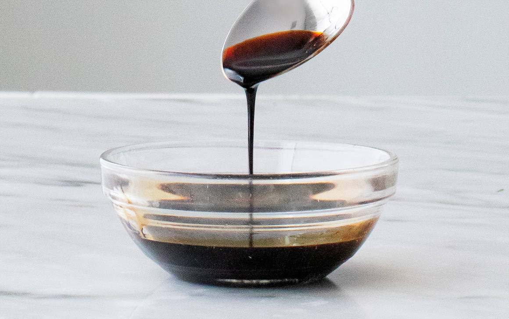
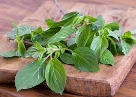
 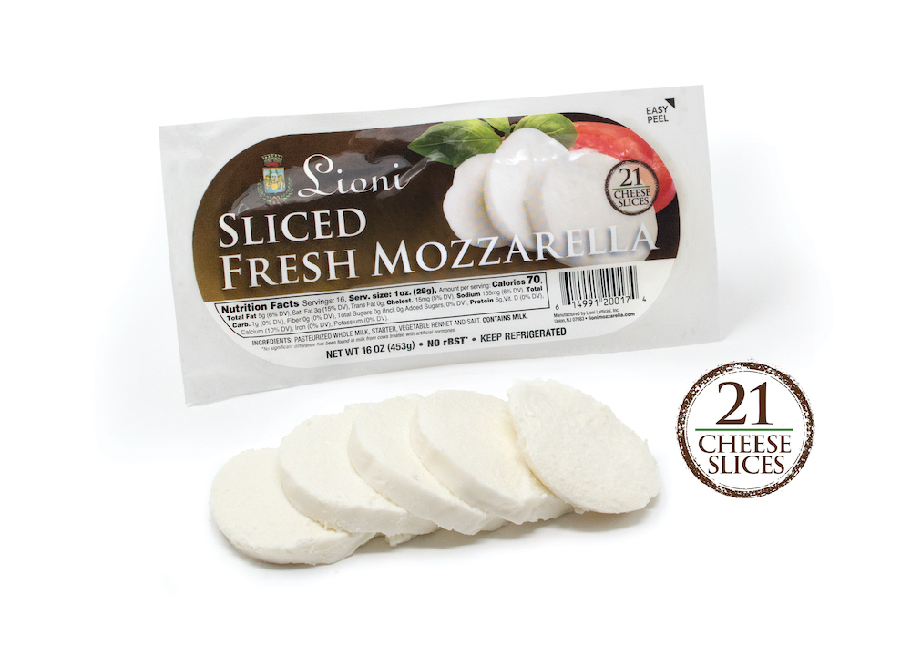
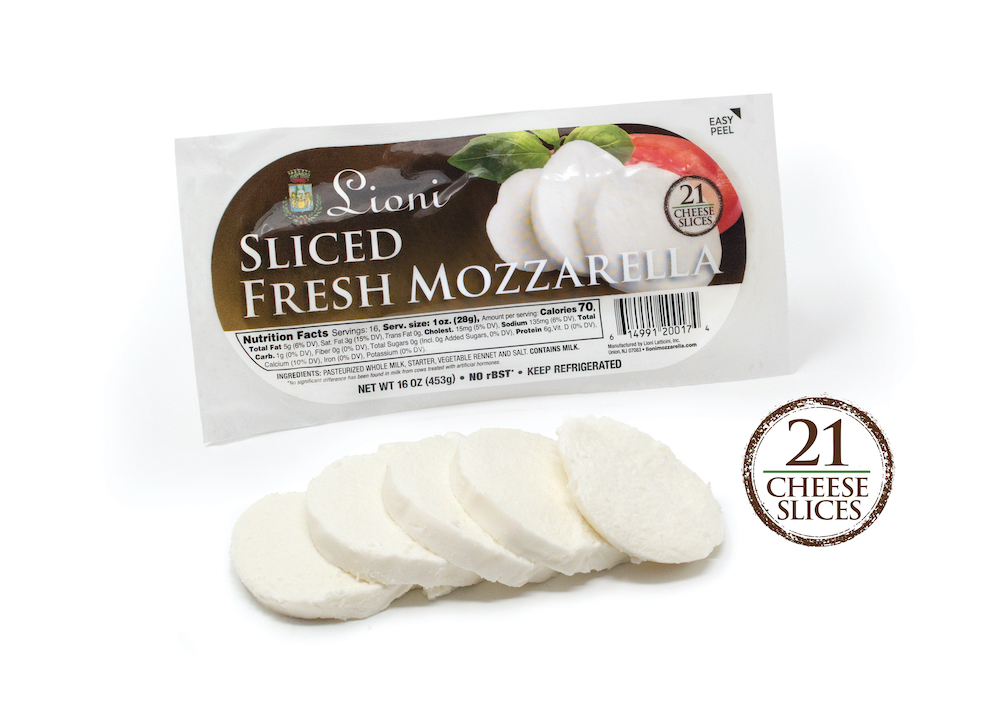
 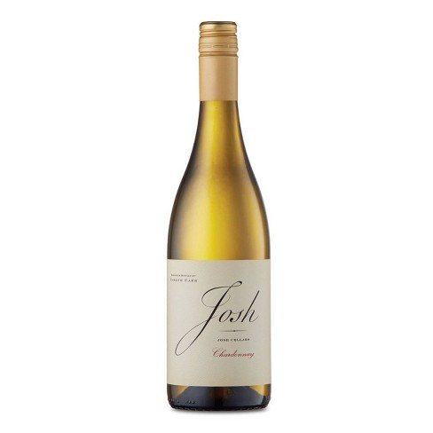
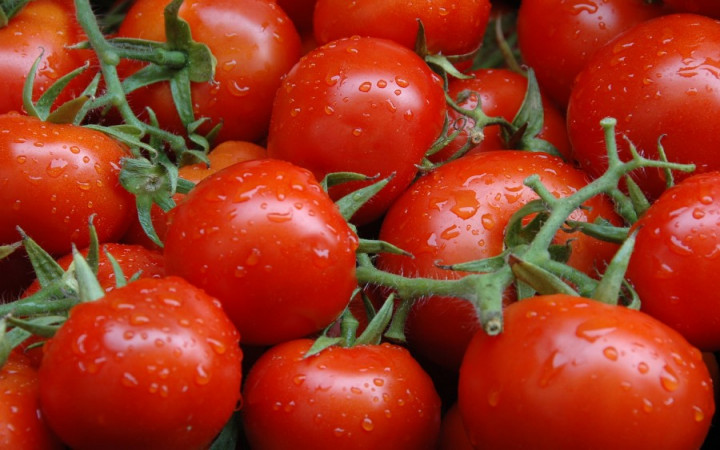
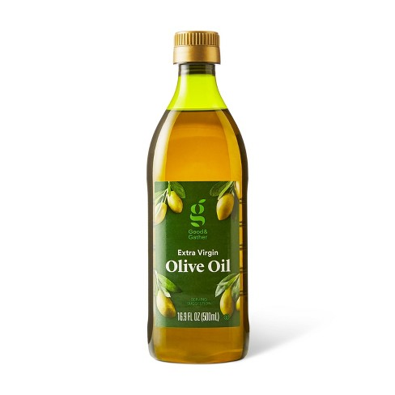
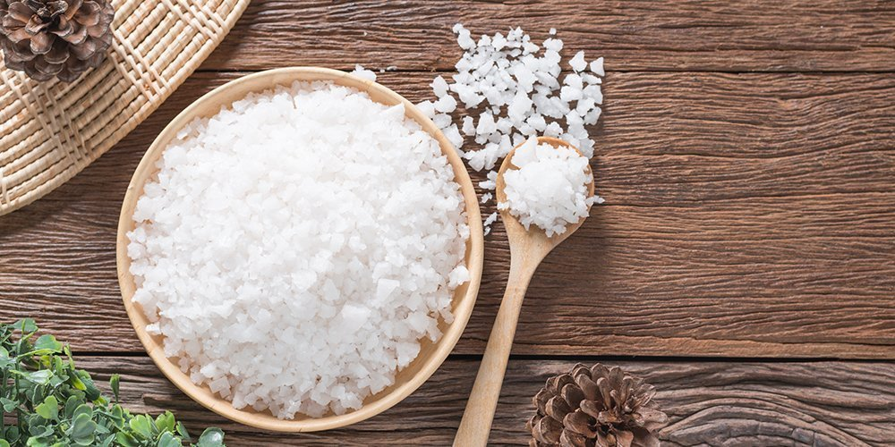
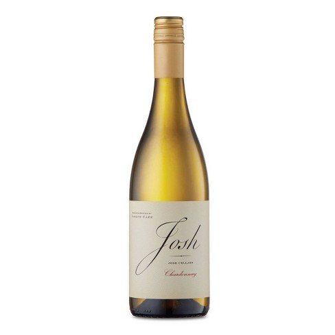
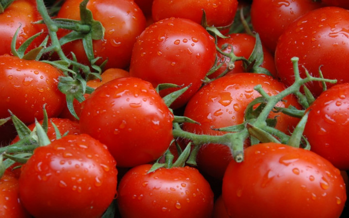
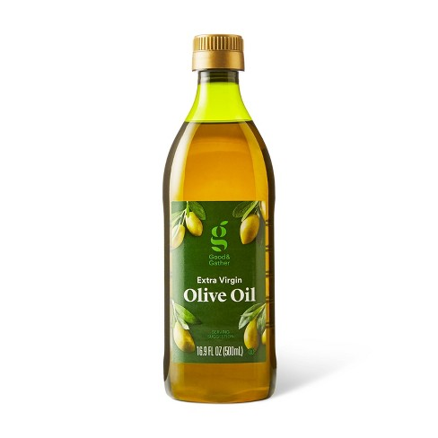
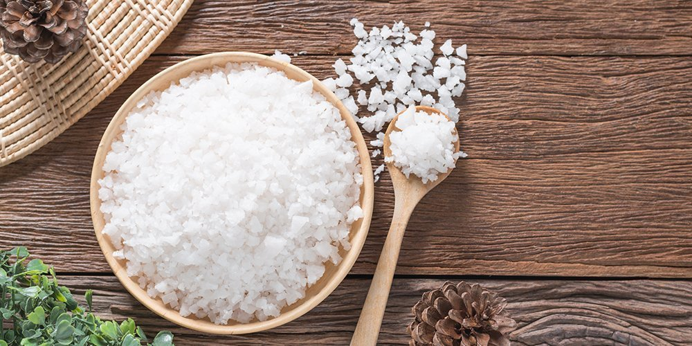
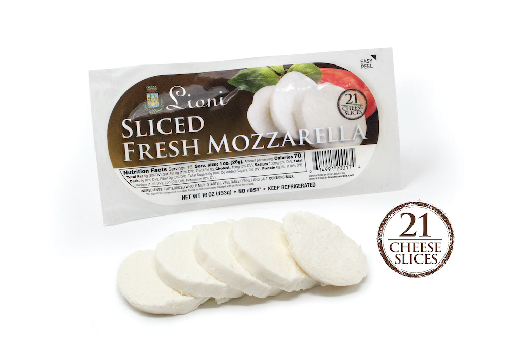
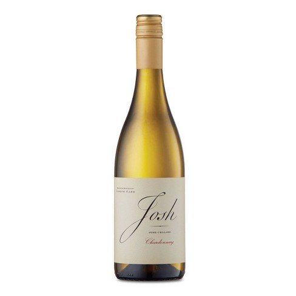
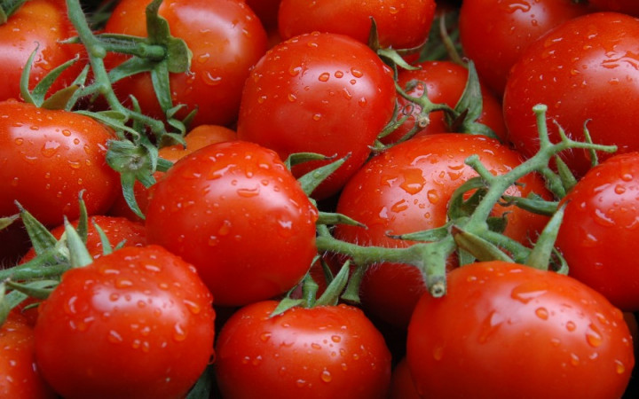
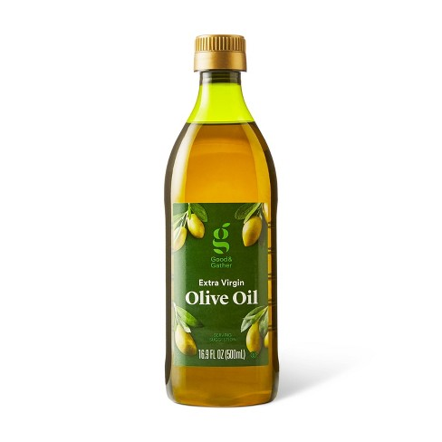
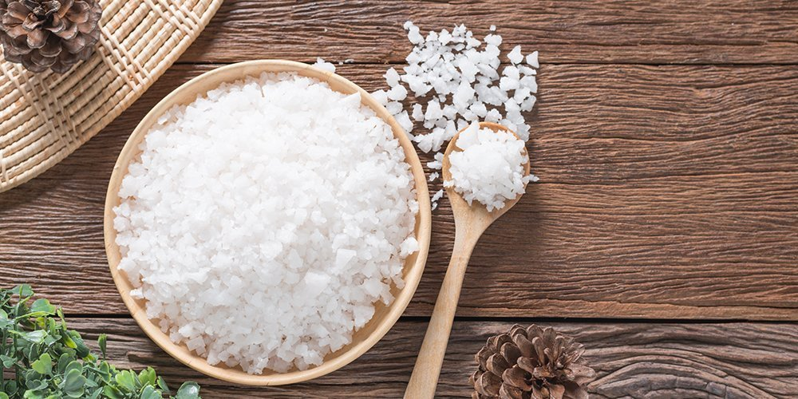